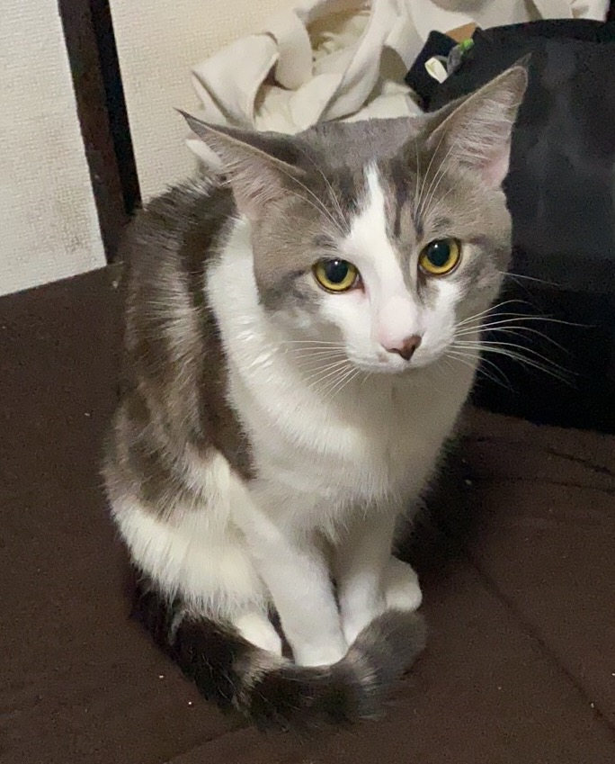

interests
(hover to see the snake)
I have a cool Mexican black king snake as my pet 😠that I've wanted to get since high school

I like my friend's cat, he is so cute 🤩!

I keep a lot of plants because I like the feeling of being surrounded by plants indoors🪴
I like lying on the lawn and soaking up the sun🏝️

Of the places I've hiked recently, The Oze National Park is the most beautiful⛰️